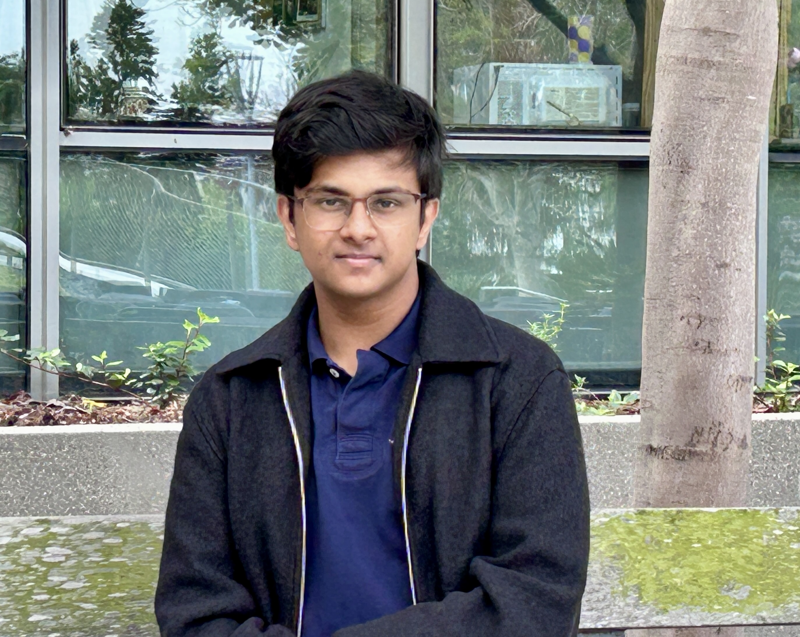
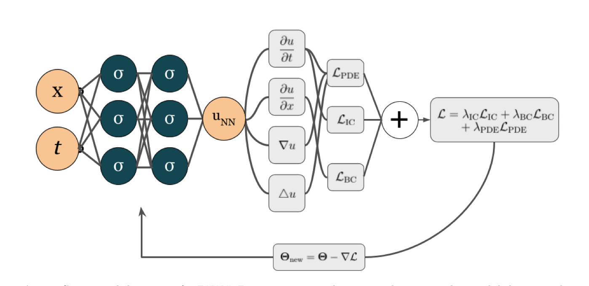
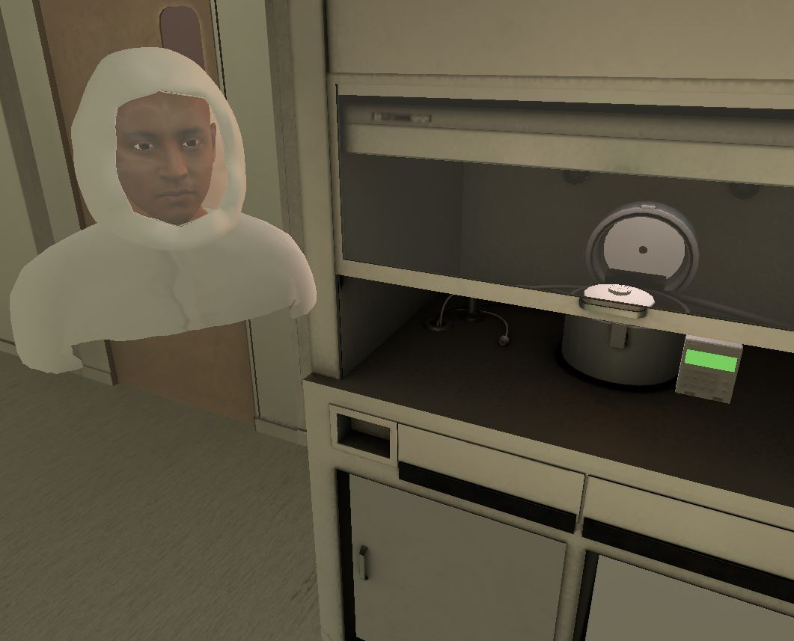
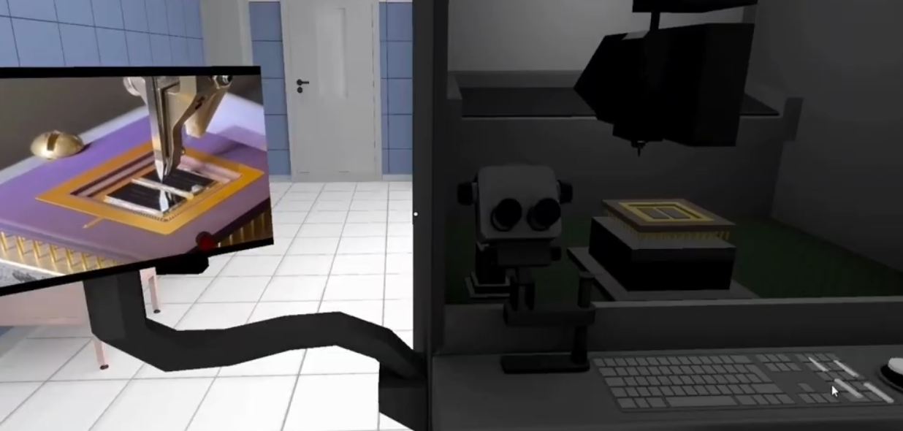
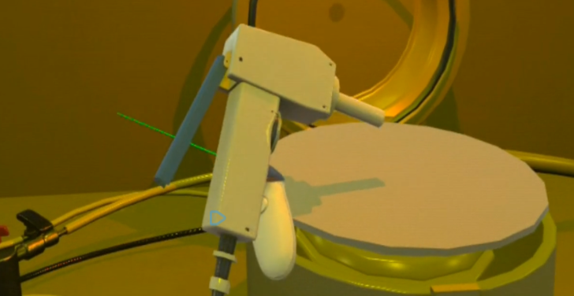

Hello, my name is Ishan and I am interested broadly in the application of AI to scientific processes and physical problems. One particular problem I've explored is the use of different neural archotectures to solve PDEs, some of the hardest problems in math.
I have worked with the Micro-Nano Technology Education Center and California Institute for Telecommunications and Information Technology (CaLIT2) the to develop digital twins of the semiconductor cleanroom at UC Irvine. I later expanded this work with the Princeton Materials Institute to develop high fidelity simulations of their device packaging processes.
I am an advocate for the safe application of AI. In 2023, I was named OC AI Ambassador and have since spoken at various panels and conferences on AI in education. In 2024, I addressed senior members of the Federal Government at the White House regarding my work in semicondcutor manufacturing simulations.
Currently, I am working on neural operators to integrate physical priors into neural networks to solve PDEs efficiently. I am a 10th grade student at Troy High School in Fullerton, and in the computer science diploma program. I am a SIAM member and secretary of my school's Math Club.




